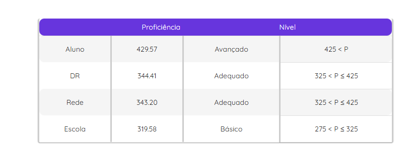

1° Trimestre:
Atividade Quebrando a Banca

Objetivo: Essa atividade tem o objetivo de assistir o filme Quebrando a Banca e responder algumas perguntas sobre ele.
Opinião: Eu achei a atividade bem legal, porque foi com base no filme, e isso deixou a aula mais descontraída por conta do filme.
Habilidades: C5 - H31, H32
Atividade Quebrando a Banca AV2

Objetivo: Desenvolver um jogo original ou atividades gamificadas utilizando os conceitos de análise combinatória e teoria das probabilidades, inspirado no filme Quebrando a Banca.
Opinião: To achando essa atividade bem massa, desenvolver um jogo é bem diferente e prático comparado as atividades normais.
Habilidades: C5 - H30, H31
2° Trimestre
Atividade de Estátisca
Objetivo: Era criar um formulário de um tema a excolha era livre e calcular medidas de tendência central (média, mediana, moda) e de dispersão (amplitude) e criar gráficos.
Opinião: Eu achei a atividade bem legal, porque foi com base no filme, e isso deixou a aula mais descontraída por conta do filme.
Habilidades: C4 - H27, H28 e H29
Nota do Passe
Objetivo: Uma Prova para avaliar o desempenho dos alunos
Opinião: Uma Prova igual as outras né nada de novo mas pelo menos eu fui bem
Habilidades: